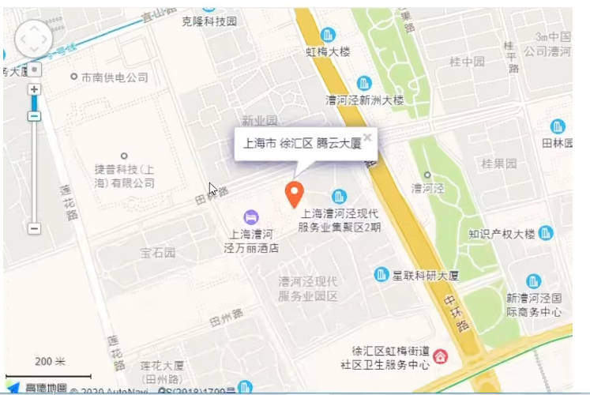

负责重点项目的前端技术方案和架构的研发和维护工作
五年以上前端开发经验，精通html5/css3/javascropt等wed开发技术;
熟悉bootstrap，vue，angularjs，reactjs等框架，熟练掌握一种以上代码风格严谨;
能高保真还原设计稿，能兼容各种浏览器
对web前端的性能优化以及web常见漏洞有一定的理解和相关实践:
具备良好的分析解决问题能力，能独立承担任务，有开发进度把控能力;
责任心强，思路路清晰，抗压能力好，具备良好的对外沟通和团队协作能力。
上海市 腾云大厦
